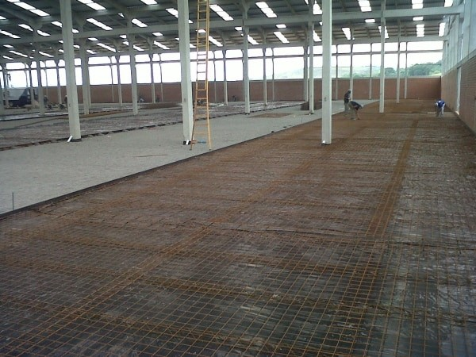

Portfólio

A SRM está apta para atuar em projetos e execuções de empresas Públicas e Privadas em todas as disciplinas.

Reforma da Quadra Poliesportiva do distrito de Santa Rosa de Lima, Jaguarari-Ba - Consórcio do Piemonte do Itapicuru. (Disciplina Civil).

Reforma do Galpão, da support Mining na Rodovia BA, 314 S/N Mina Barrinha – Distrito de Pilar, Jaguarari-Ba. (Disciplina Civil)
Outros projetos
- Reparos e Substituição de Correias Transportadoras – Polimix – Santana do Sobrado – Ba (Disciplina Mineração)
- Construção do Galpão de Usinagem Jacildo Ribeiro – Próximo à feira Livre de Pilar – Jaguarari-Ba. (Disciplina Civil)
- Construção do Galpão da Loja Tudo é 10 na Rodovia Mina Barrinha. (Disciplina Civil)
- Elaboração de Vários Projetos Civis, Mecânicos, Tubulação, Elétrico e Estrutura Metálicas, para Ero Brasil S/A.